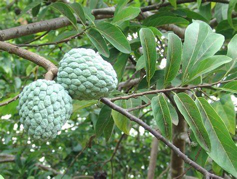

Basonym of Drug
Sitaphala
Main Synonym
- Krishna beeja
- Gandha gatram
- Agrimakhya
- Atripya
Regional Name
- Hindi: Sharifa, Seetaphal
- English: Custard apple, Sugar apple, Sweet sop
- Assamese: Katal
- Bengali: Ata
- Kannada: Seetaphal
- Marathi: Seetaphal
- Tamil: Seetapazham, Cintamaram
- Telugu: Sitaphalamu, Seetapandu
Botanical Name
Annona squamosa Linn
Family
Annonaceae
External Morphology
A small to medium-sized tree growing in the temperate climate of India, with pale brown bark, thin leaves, solitary or clustered flowers, and round to heart-shaped fruits.
Useful Parts
Important Phytoconstituent
The leaf and root contain squamone and bullatacinone; the root also contains Anoniane, Rocemerine, Norcorydine, Iscocorydine, glaucin, and the leaves contain a cardiotonic alkaloid, quinoline. Seeds contain annonacin A & annonastatin.
Rasa Panchak
- Rasa: Madhura (Sweet)
- Guna: Sheeta (Cold)
- Vipaka: Madhura (Undergoes sweet taste after digestion)
- Virya: Sheeta (Cold)
Action
Vatapitta shamaka (reduces vitiated vata and pitta dosha), Balya (provide strength)
Therapeutic Indication
- Strengthens cardiac muscle
- Acts as expectorant
- Management of diabetes
- Head lice
- Skin diseases
Therapeutic Uses
- Root decoction for diarrhea
- Dried fruit powder for pus-filled ulcers
- Paste of leaf and root for fungal infections
- Fruit pulp tonic for cardiac muscles
- Root decoction for head lice
- Bark decoction to control blood sugar
- Leaf powder mixed with honey as expectorant
Dose
- Powder: 1-3 g
- Root decoction: 40-50 ml
- Fruit pulp: 40-50 g
Adverse Effect
The seed inside the fruit has abortificant action and hence should not be used by pregnant women.